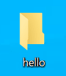
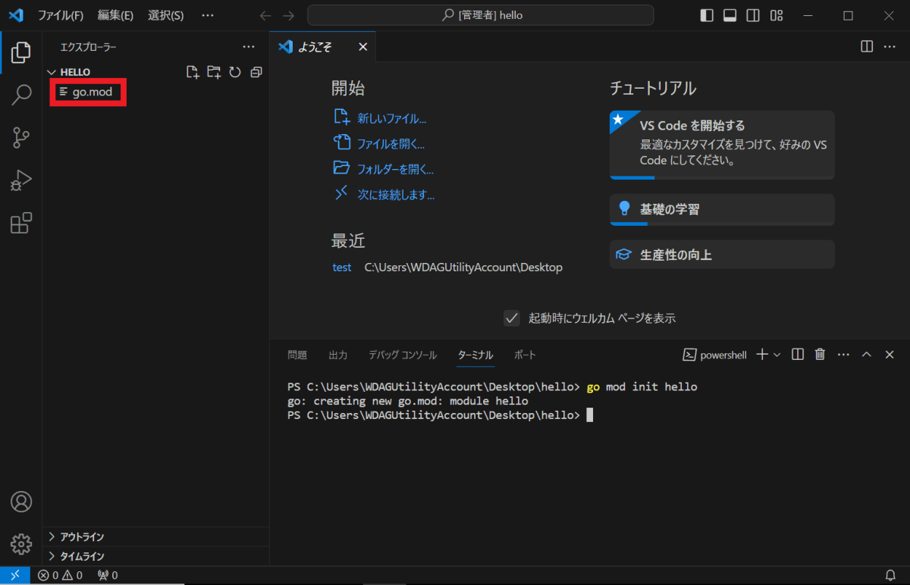
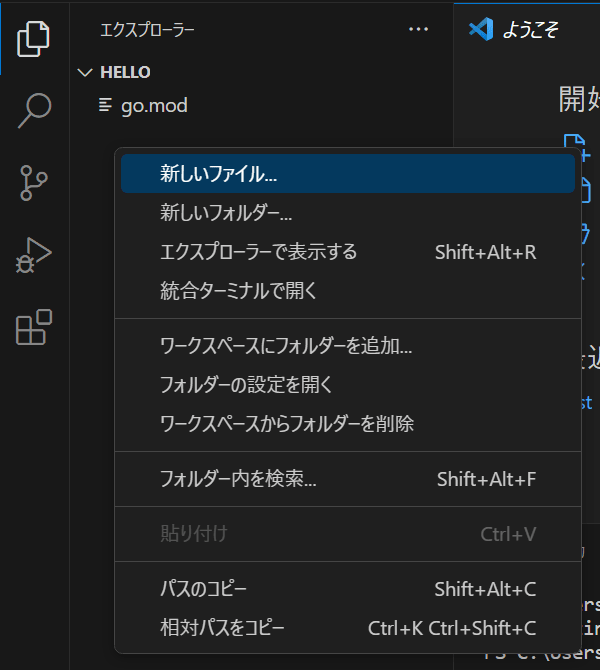
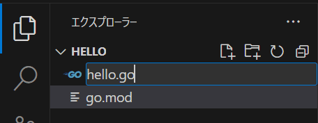
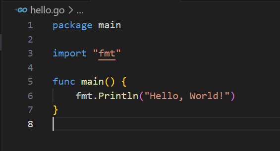
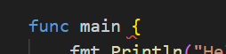
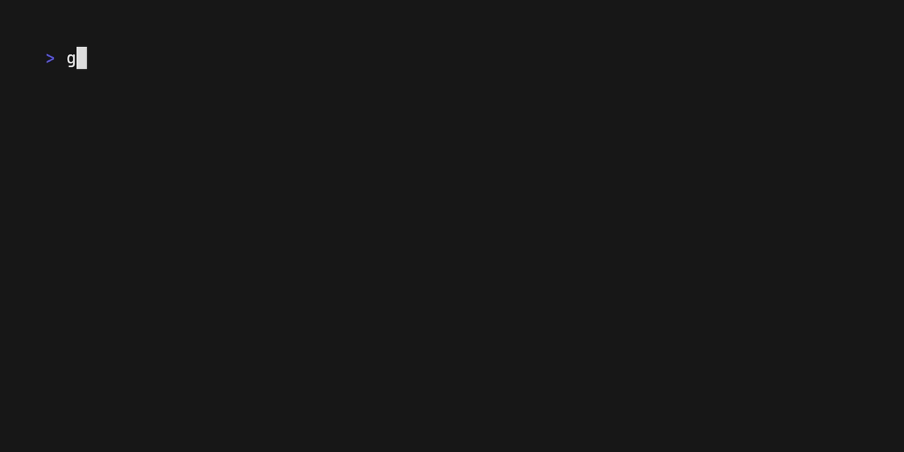
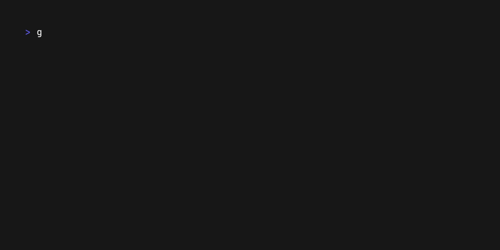
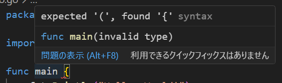
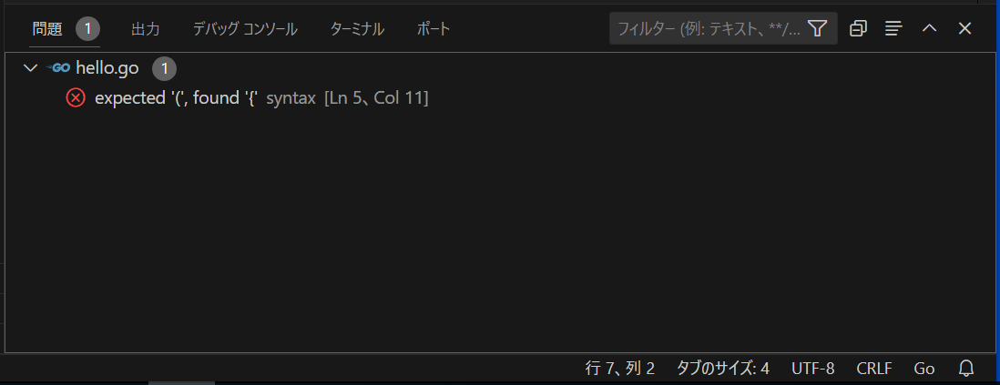

第三章 你好，世界！（开始开发，程序结构）
这次我们将通过一个仅显示 Hello, World! 的经典程序，学习如何开始编程，以及编程的基本工作流程。
3.1 程序与源代码
人们有时会特地强调文本特性，将生成程序的文本，称为“源代码”或“代码”。这些术语，基本上指的是同一个东西，请根据需要在脑中替换。
3.2 创建放程序的地方
首先，需要一个编写程序的地方。
让我们来创建一个新的目录。名字随便起，但这一章暂时用 hello 当名字。

创建目录后，在 VSCode 中打开它。
3.3 初始化模块
打开目录后，接下来需要初始化模块。关于模块的细节，稍后会进行说明，请打开终端并输入以下命令。
go mod init hello
如果在资源管理器中生成了名为 go.mod 的文件（红框），则模块初始化成功。
如果不成功，可能是命令敲错了、Go 安装失败，或当前目录与 VSCode 打开的目录不同。

3.4 编写程序
好了，现在我们有了放程序的地方。
接下来创建文件。方法可以有很多，但在这里，我们选择在 VSCode 的资源管理器上空白处右键点击，然后点击“新建文件...”来创建。

接下来会要求输入文件名，这里输入 hello.go ，并按下回车键确认。
.go 部分称为扩展名，是标识文件类型的重要部分。正确输入扩展名后，文件左侧的图标也会变成看起来像 “GO” 的图标。

在创建的文件中输入以下文本。如果觉得麻烦，可以直接复制粘贴下面的内容。另外，像往常一样，请确保输入法为半角状态。
package main
import "fmt"
func main() {
fmt.Println("Hello World!")
}
输入后，按“Ctrl+s”保存。这样就写好了第一个程序。

如果下图所示的红色波浪线（在这里位于 { 的前面）显示出来，则表示该位置存在错误。如何处理错误，将在后面的章节说明，请再次确认输入的程序是否正确。

3.4 运行程序
现在执行程序。请在终端中输入以下命令。
go run .
go run 是执行程序的 Go 命令， . 的意思是当前目录。合并后，意思是“执行当前目录的程序！”
执行命令后，如果终端输出 Hello, World! 则表示运行成功。恭喜您！🎉

前回说明的那样，如果想要多次执行相同的命令，可以依次按下“上箭头、回车”。
3.5 编辑代码
如果程序顺利执行，那么这次我们尝试将程序修改为显示另一种语言。我们将用以下内容，改写之前写的程序。
package main
import "fmt"
func main() {
fmt.Println("跨越长城，走向世界！")
}
修改的是 hello world！ 的部分。
*构成程序的主要字符，必须是半角字符。但夹在 "" 之间的部分（称为字符串）等可以使用全角字符。具体情况稍后说明。
使用 go run . 执行程序时，应该会显示如下内容：

成功显示文字了吗？
如果做到的话，请尝试试着显示更多不同的消息吧。
3.6 处理错误
“错误” 这个东西，将会长期陪伴你。编辑器报告错误，绝不是在责怪你。
它会温柔地教你错误的原因和修正方法，甚至比学校的老师更亲切。
在 VSCode 中查看错误信息的方法：
-
在红色波浪线下方，用鼠标光标悬停时，会出现“悬停窗口”。
-
编辑器底部状态栏，点击
✕ 1 ⚠ 0的部分，可以显示“问题”标签。
总之，有很多手段可以查看错误信息。


这里的提示 expected '(', found '{' ，意思是“接下来应该是 (，但实际的符号确实 { ”。实际上，这是编辑器在告诉你在 main 后面应该接 () 。明白这一点，就可以修正这个问题。
英语提示，可能会让人感到害怕，但就算英语半生不熟，也可以连蒙带猜，弄懂大体上的内容。如果报错内容很复杂，也可以将错误信息完整地粘贴到 Google 中搜索，很可能会有人提供解决方案。
如果仍然感到怵头，可以利用像 ChatGPT 这样的 AI，向他们提问，并附上错误的信息和程序的文本，如果仍然有不明白的地方，可以继续和AI对话，逐步分析错误的原因。
“报错”并不是要责怪你做了坏事。**与其因为害怕出错而烦恼，不如先把想不通的部分写出来试试。**通过“出错”来学习，才是正确与高效的做法。
无论多么熟练的程序员，都很难一次写好想要的程序。只要是人，都需要依赖“犯错”来寻路。
（其实，对于熟练的程序员来说，“有错误却没提示”的情况更让人害怕。不骗你。）
请不要害怕错误，让“错误提示”成为你的趁手工具。
明明没写错，为什么却一直提示有错？
尽管如此，有时由于错误检查程序的 bug 或其他原因，即使是正确的代码，也可能无端报错。
这种情况下，从命令面板（快捷键 Ctrl+Shift+p）中选择 Go: Restart Language Server 通常可以解决问题。
相反，如果这样做仍然无法解决，很可能是因为你漏看了程序中的某些问题。
3.7 基本的开发流程
到目前为止，我们已经掌握了基本的开发流程。这个流程在今后也不会改变。
-
首先创建目录，并初始化模块。
-
创建 .go 文件，编写程序。
-
编辑程序。
-
执行程序。
-
如果有报错，请阅读错误提示，并修正代码。
-
反复执行“编辑、执行和修正”的循环，完善程序。
3.8 理解程序
刚才我们通过复制粘贴，体验了一把写程序的过程。接下来，我们要了解程序的细节。不过很难解释清楚每一个细节，现在只需了解大致即可。
此外，今后也会时不时出现**“声明/declaration”**这个词。
简单来说，就是指创建某个东西，告诉电脑**“这里有一个名为〇〇的东西！内容是XXXX！”**的意思。
稍微有点难以解释或翻译呢……有个大致的印象就可以了。
package main // 声明一个包
import "fmt" // 导入模块
func main() { // 函数声明
fmt.Println("Hello World!") // 调用函数
}
package main 表示该程序属于 main 包。
包是将程序捆绑在一起的单位，位于同一目录中的程序，基本上属于同一包。
import "fmt" 是用于导入其他包功能的导入语句。 fmt 包提供了在屏幕上显示文本的 Println 等函数。
func main() { 到 } 是 main 函数的声明。函数是指某些处理的集合。
main 包的 main 函数，是一个特殊的函数，表示程序的起点。可以认为在 go run . 中执行的处理，就是去运行这个 main 函数。
你可以试着将包名（package main）或函数名（func main() ）中的任意一个从 main 改为其他的名字，再次运行 go run .时应该会提示错误，无法正常执行。
突然出现了很多新术语，相关细节稍后解释，现在只需了解“**原来有这样的东西”**就可以了。
3.9 程序注释
// 到行末的部分，是程序中不被识别的注释（或者说“备注”）。注释内容也可以使用全角字符。
虽然无论有没有注释，都不会影响程序的执行。但清晰的注释，可以使程序（对人来讲）更易读。
使用 /* */ 可以写多行注释（块注释）。与 // 相比，使用的机会较少，但偶尔还是会用到。
这不是注释 // 这是单行注释
这也不是注释
/*
多行注释
不止一行
也叫做“块注释”
*/
// 在 GO 程序里面
// 很多人习惯
// 用好几行单行注释
// 来代替多行注释
// （仅是个人感想）
评论具有“不影响程序执行”的特性，还可以作为“文档”或“指示”，用于除注释以外的目的，。这种注释的用法，将在合适的时候说明。
本章总结
- 在 Go 中创建新程序，需要创建目录并初始化模块。
- 「编写代码，用
go run .上运行，修正代码」是基本的编程流程。 - 错误是和蔼的老师，值得尊敬与感激。如果搞不明白，可以求助 AI。